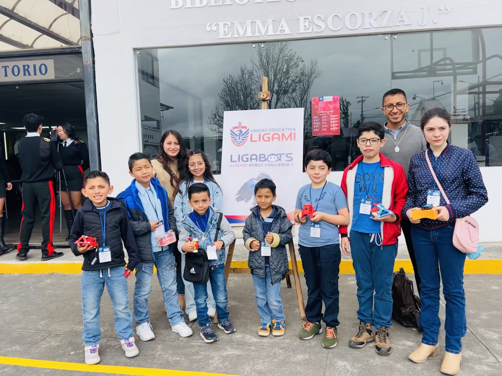

Tecnología que abraza las diferencias
RoboSense nació de una convicción: la robótica es para todos los niños, no solo para quienes aprenden rápido o de la manera convencional.
Trabajamos con niños que necesitan más tiempo, más calma, más repetición o simplemente un ambiente diferente al aula tradicional. La tecnología se convierte en un puente hacia la concentración, la autonomía y la confianza.
No hay un ritmo fijo. No hay presión. Hay un plan pensado para cada niño, en coordinación con su familia.
Lo que tu hijo desarrolla en este programa
Cada habilidad está pensada para el largo plazo — no solo para pasar una clase.
Atención y concentración
La construcción guiada ayuda a mantener el foco de manera natural, sin forzar.
Comunicación
Expresar ideas, pedir ayuda y explicar lo que construyeron fortalece el lenguaje.
Autonomía
Cada pequeño logro es un paso hacia la independencia y la autoconfianza.
Interacción social
El trabajo en grupos pequeños enseña a relacionarse en un ambiente controlado.
Rutina y estructura
Las sesiones tienen estructura clara que ayuda a niños que necesitan predecibilidad.
Autoestima
Ver que pueden construir un robot que funciona transforma la imagen que tienen de sí mismos.
Las mismas herramientas que usan los profesionales
No usamos versiones simplificadas. Desde el inicio trabajan con tecnología real.
Progreso a medida — sin comparaciones
En RoboSense no se aplican los niveles estándar si no es conveniente para el estudiante. El objetivo es el progreso de cada niño, no alcanzar una meta fija.
Lo que los padres más valoran
Estas no son promesas — son las razones reales por las que las familias nos eligen.
Sin presión, sin comparaciones
Cada niño avanza a su propio ritmo. No hay "atrás" en RoboSense.
Plan individualizado
Trabajamos con los padres desde el primer día para entender las necesidades de cada niño.
Ambiente predecible
La estructura de las sesiones da seguridad a los niños que la necesitan.
Seguimiento real
Informes y comunicación abierta con los padres para ajustar el proceso.
¿Quieres saber si RoboSense es para tu hijo?
El primer paso es una conversación. Escríbenos por WhatsApp y agendamos una evaluación sin costo para conocer a tu hijo y su situación.